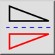
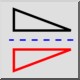
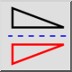
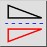

Отобразить по вертикали
Панель инструментов / Иконка:
 

Меню: Модификация > Отобразить по вертикали
Горячая клавиша: F, V
Команды: flipvertically | fv
Это автоматический перевод.
Панель инструментов / Иконка:
 

Меню: Модификация > Отобразить по вертикали
Горячая клавиша: F, V
Команды: flipvertically | fv